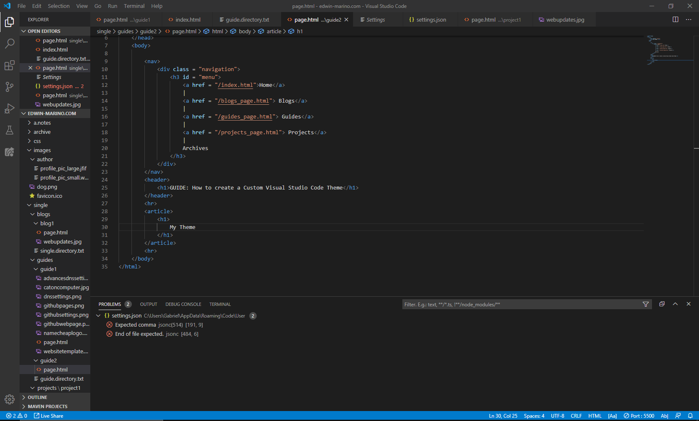

Before and After
Default Theme The theme I created (Available here)

Where to begin
1.Open up Visual Studio Code and press CTLR + SHIFT + P
to open up the command palette
2. Type "User" so "Preferences: User Settings" pops up
click on it or hit enter if it's the top suggestion (faster)
3. Click on the folder named "WORKBENCH" NOT "WORKPLACE"
than right under "Experimental: Editor Associations" click
click on Edit setting.JSON
If you don't see it make sure you clicked on Workbench or
type "Experimental: Editor Associations" into the search bar
4. Next it will open a JSON file that has all your settings
for how your visual Studio Theme looks like right now
If you already have a theme installed I suggest uninstalling it
as it could complicate this process
It's best to start with a fresh one
To switch back to a default theme just open command palette and type
preferences and select color theme. From there you should be able
to select a default theme
Creating your own theme
There are actually two parts to this process
First you're going to want to build your general theme
and then your going to want to edit the font theme
Because picking font colors is really tidious if you still
haven't settled with a background color that fits the rest of your
interface
Also font colors can be language specific. So you can have font colors
set just for Java, Python, HTML whatever you can possibly name!
Just look at how my font text is completely diffect from the font text
in the default
Also here's a link to a website that can generate color themes
that are complemtary of each other
Click Here
Editing the workbench
When you look inside your settings.JSON you will see all sorts
of User Settings that you manuallying switched from default
It may be empty if this is your first time opening Visual Studio Code
In order to change to look of the GUI you're going to want to use this
"workbench.colorCustomizations": {}
and inside the {} you add a "property": value like this
"workbench.colorCustomizations": {
"foreground": "#ffffff",
"someotherProperty": "#hexcolr"
}
Now if you want to actually color ALL of the IDE you're going to need
all the possible property names
Here is a list provided by lol-russo on github:
"workbench.colorCustomizations": {
// Contrast Colors - The contrast colors are typically only set for high contrast themes. If set, they add an additional border around items across the UI to increase the contrast.
"contrastActiveBorder": "",
"contrastBorder": "",
// Base Colors
"focusBorder": "",
"foreground": "",
"widget.shadow": "",
"selection.background": "",
"descriptionForeground": "",
"errorForeground": "",
// Text Colors — Colors inside a text document, such as the welcome page.
"textBlockQuote.background": "",
"textBlockQuote.border": "",
"textCodeBlock.background": "",
"textLink.activeForeground": "",
"textLink.foreground": "",
"textPreformat.foreground": "",
"textSeparator.foreground": "",
// Button Control — A set of colors for button widgets such as Open Folder button in the Explorer of a new window.
"button.background": "",
"button.foreground": "",
"button.hoverBackground": "",
// Dropdown Control — A set of colors for all dropdown widgets such as in the Integrated Terminal or the Output panel. Note that the dropdown control is not used on macOS currently.
"dropdown.background": "",
"dropdown.listBackground": "",
"dropdown.border": "",
"dropdown.foreground": "",
// Input Control — Colors for input controls such as in the Search view or the Find/Replace dialog.
"input.background": "",
"input.border": "",
"input.foreground": "",
"input.placeholderForeground": "",
"inputOption.activeBorder": "",
"inputValidation.errorBackground": "",
"inputValidation.errorBorder": "",
"inputValidation.infoBackground": "",
"inputValidation.infoBorder": "",
"inputValidation.warningBackground": "",
"inputValidation.warningBorder": "",
// Scroll Bar Control
"scrollbar.shadow": "",
"scrollbarSlider.activeBackground": "",
"scrollbarSlider.background": "",
"scrollbarSlider.hoverBackground": "",
// Badge — Badges are small information labels, for example, search results count.
"badge.foreground": "",
"badge.background": "",
// Progress Bar
"progressBar.background": "",
// Lists and Trees — Colors for list and trees like the File Explorer. An active list/tree has keyboard focus, an inactive does not.
"list.activeSelectionBackground": "",
"list.activeSelectionForeground": "",
"list.dropBackground": "",
"list.focusBackground": "",
"list.focusForeground": "",
"list.highlightForeground": "",
"list.hoverBackground": "",
"list.hoverForeground": "",
"list.inactiveSelectionBackground": "",
"list.inactiveSelectionForeground": "",
"list.inactiveFocusBackground": "",
"list.invalidItemForeground": "",
// Activity Bar — The Activity Bar is displayed either on the far left or right of the workbench and allows fast switching between views of the Side Bar.
"activityBar.background": "",
"activityBar.dropBackground": "",
"activityBar.foreground": "",
"activityBar.border": "",
"activityBarBadge.background": "",
"activityBarBadge.foreground": "",
// Side Bar — The Side Bar contains views like the Explorer and Search.
"sideBar.background": "",
"sideBar.foreground": "",
"sideBar.border": "",
"sideBar.dropBackground": "",
"sideBarTitle.foreground": "",
"sideBarSectionHeader.background": "",
"sideBarSectionHeader.foreground": "",
// Editor Groups & Tabs — Editor Groups are the containers of editors. There can be up to three editor groups. A Tab is the container of an editor. Multiple Tabs can be opened in one editor group.
"editorGroup.background": "",
"editorGroup.border": "",
"editorGroup.dropBackground": "",
"editorGroupHeader.noTabsBackground": "",
"editorGroupHeader.tabsBackground": "",
"editorGroupHeader.tabsBorder": "",
"tab.activeBackground": "",
"tab.activeForeground": "",
"tab.border": "",
"tab.activeBorder": "",
"tab.unfocusedActiveBorder": "",
"tab.inactiveBackground": "",
"tab.inactiveForeground": "",
"tab.unfocusedActiveForeground": "",
"tab.unfocusedInactiveForeground": "",
"tab.hoverBackground": "",
"tab.unfocusedHoverBackground": "",
"tab.hoverBorder": "",
"tab.unfocusedHoverBorder": "",
// Editor Colors — for syntax highlighting, use the editor.tokenColorCustomizations setting. All other editor colors are listed here
"editor.background": "",
"editor.foreground": "",
"editorLineNumber.foreground": "",
"editorLineNumber.activeForeground": "",
"editorCursor.background": "",
"editorCursor.foreground": "",
"editor.selectionBackground": "",
"editor.selectionForeground": "",
"editor.inactiveSelectionBackground": "",
"editor.selectionHighlightBackground": "",
"editor.selectionHighlightBorder": "",
"editor.wordHighlightBackground": "",
"editor.wordHighlightBorder": "",
"editor.worldHighlightStrongBackground": "",
"editor.wordHighlightStrongBorder": "",
"editor.findMatchBackground": "",
"editor.findMatchHighlightBackground": "",
"editor.findRangeHighlightBackground": "",
"editor.findMatchBorder": "",
"editor.findMatchHighlightBorder": "",
"editor.hoverHighlightBackground": "",
"editor.lineHighlightBackground": "",
"editor.lineHighlightBorder": "",
"editorLink.activeForeground": "",
"editor.rangeHighlightBackground": "",
"editor.rangeHighlightBorder": "",
"editorWhitespace.foreground": "",
"editorIndentGuide.background": "",
"editorRuler.foreground": "",
"editorCodeLens.foreground": "",
"editorBracketMatch.background": "",
"editorBracketMatch.border": "",
"editorOverviewRuler.border": "",
"editorOverviewRuler.findMatchForeground": "",
"editorOverviewRuler.rangeHighlightForeground": "",
"editorOverviewRuler.selectionHighlightForeground": "",
"editorOverviewRuler.wordHighlightForeground": "",
"editorOverviewRuler.wordHighlightStrongForeground": "",
"editorOverviewRuler.modifiedForeground": "",
"editorOverviewRuler.addedForeground": "",
"editorOverviewRuler.deletedForeground": "",
"editorOverviewRuler.errorForeground": "",
"editorOverviewRuler.warningForeground": "",
"editorOverviewRuler.infoForeground": "",
"editorError.foreground": "",
"editorError.border": "",
"editorWarning.foreground": "",
"editorWarning.border": "",
"editorInfo.foreground": "",
"editorInfo.border": "",
"editorHint.foreground": "",
"editorHint.border": "",
"editorGutter.background": "",
"editorGutter.modifiedBackground": "",
"editorGutter.addedBackground": "",
"editorGutter.deletedBackground": "",
// Diff Editor Colors — For coloring inserted and removed text, use either a background or a border color but not both.
"diffEditor.insertedTextBackground": "",
"diffEditor.insertedTextBorder": "",
"diffEditor.removedTextBackground": "",
"diffEditor.removedTextBorder": "",
// Editor Widget Colors - The Editor widget is shown in front of the editor content. Examples are the Find/Replace dialog, the suggestion widget, and the editor hover
"editorWidget.background": "",
"editorWidget.border": "",
"editorSuggestWidget.background": "",
"editorSuggestWidget.border": "",
"editorSuggestWidget.foreground": "",
"editorSuggestWidget.highlightForeground": "",
"editorSuggestWidget.selectedBackground": "",
"editorHoverWidget.background": "",
"editorHoverWidget.border": "",
"debugExceptionWidget.background": "",
"debugExceptionWidget.border": "",
"editorMarkerNavigation.background": "",
"editorMarkerNavigationError.background": "",
"editorMarkerNavigationWarning.background": "",
"editorMarkerNavigationInfo.background": "",
// Peek View Colors — Peek views are used to show references and declarations as a view inside the editor.
"peekView.border": "",
"peekViewEditor.background": "",
"peekViewEditorGutter.background": "",
"peekViewEditor.matchHighlightBackground": "",
"peekViewResult.background": "",
"peekViewResult.fileForeground": "",
"peekViewResult.lineForeground": "",
"peekViewResult.matchHighlightBackground": "",
"peekViewResult.selectionBackground": "",
"peekViewResult.selectionForeground": "",
"peekViewTitle.background": "",
"peekViewTitleDescription.foreground": "",
"peekViewTitleLabel.foreground": "",
// Merge Conflicts — Merge conflict decorations are shown when the editor contains special diff ranges.
"merge.currentHeaderBackground": "",
"merge.currentContentBackground": "",
"merge.incomingHeaderBackground": "",
"merge.incomingContentBackground": "",
"merge.border": "",
"merge.commonContentBackground": "",
"merge.commonHeaderBackground": "",
"editorOverviewRuler.currentContentForeground": "",
"editorOverviewRuler.currentContentForeground": "",
"editorOverviewRuler.commonContentForeground": "",
// Panel Colors — Panels are shown below the editor area and contain views like Output and Integrated Terminal.
"panel.background": "",
"panel.border": "",
"panel.dropBackground": "",
"panelTitle.activeBorder": "",
"panelTitle.activeForeground": "",
"panelTitle.inactiveForeground": "",
// Status Bar Colors — The Status Bar is shown in the bottom of the workbench.
"statusBar.background": "",
"statusBar.foreground": "",
"statusBar.border": "",
"statusBar.debuggingBackground": "",
"statusBar.debuggingForeground": "",
"statusBar.debuggingBorder": "",
"statusBar.noFolderForeground": "",
"statusBar.noFolderBackground": "",
"statusBar.noFolderBorder": "",
"statusBarItem.activeBackground": "",
"statusBarItem.hoverBackground": "",
"statusBarItem.prominentBackground": "",
"statusBarItem.prominentHoverBackground": "",
// Title Bar Colors (macOS)
"titleBar.activeBackground": "",
"titleBar.activeForeground": "",
"titleBar.inactiveBackground": "",
"titleBar.inactiveForeground": "",
"titleBar.border": "",
// Notification Colors — Notification toasts slide up from the bottom-right of the workbench.
"notificationCenter.border": "",
"notificationCenterHeader.foreground": "",
"notificationCenterHeader.background": "",
"notificationToast.border": "",
"notifications.foreground": "",
"notifications.background": "",
"notifications.border": "",
"notificationLink.foreground": "",
// Extensions
"extensionButton.prominentForeground": "",
"extensionButton.prominentBackground": "",
"extensionButton.prominentHoverBackground": "",
"pickerGroup.border": "",
"pickerGroup.foreground": "",
// Integrated Terminal Colors
"terminal.background": "",
"terminal.foreground": "",
"terminal.ansiBlack": "",
"terminal.ansiBlue": "",
"terminal.ansiBrightBlack": "",
"terminal.ansiBrightBlue": "",
"terminal.ansiBrightCyan": "",
"terminal.ansiBrightGreen": "",
"terminal.ansiBrightMagenta": "",
"terminal.ansiBrightRed": "",
"terminal.ansiBrightWhite": "",
"terminal.ansiBrightYellow": "",
"terminal.ansiCyan": "",
"terminal.ansiGreen": "",
"terminal.ansiMagenta": "",
"terminal.ansiRed": "",
"terminal.ansiWhite": "",
"terminal.ansiYellow": "",
"terminal.selectionBackground": "",
"terminalCursor.background": "",
"terminalCursor.foreground": "",
// Debug
"debugToolBar.background": "",
// Welcome Page
"welcomePage.buttonBackground": "",
"welcomePage.buttonHoverBackground": "",
"walkThrough.embeddedEditorBackground": "",
// Git Colors
"gitDecoration.modifiedResourceForeground": "",
"gitDecoration.deletedResourceForeground": "",
"gitDecoration.untrackedResourceForeground": "",
"gitDecoration.ignoredResourceForeground": "",
"gitDecoration.conflictingResourceForeground": ""
}
Now just copy and paste into your setting!
Now all you have to do is simply add a color using #ffffffff
It's just trial and error
What I did was if I couldn't find exactly where something was and it wasn't appearing on my screen
I'd color it pink and move on to the next thing
I kept tweaking it until I found what I really liked
Than over the course of a few months when ever I'd find those pink lil devils
I'd google to find what the name was or comment out every pink color setting
Until something altered the pink little thing
Also don't forget that the settings only apply when you hit save
Editing Font Colors
This part is actually much easier and doesn't
rely on much guess work like trying to figure out
the property names of the Workbench
All you have to do is open the same settings.JSON file
and add
"textMateRules": []
Just like "workbenchColorCustomizations"
but instead of {} you NEED to use []
And of course you guess it the properties probably go inside
but it's a little different formatting for textMateRules
inside the [] goes these things called SCOPES that are formatted like this
{
"scope": "comment.block", //Comment Blocks
"settings": {
"foreground": "#cc9a50",
"fontStyle": "bold",
}
},
{
"scope": "otherproperty.block",
"settings": {
"foreground": "#cc9a50",
"fontStyle": "bold",
}
},
Each scope picks a property and than under settings
alters something about the property
here I'm mostly just going to show you to alter the "foreground"
How do you find the property names for fonts?
Say you want to color the "package" in Java or the
"tags" in HTML red than you're going to need to find the
exact scope for that specific item
All you need to do is open the command palette
and search for "Developer: Editor Tokens and Scopes"
Now when you open up the language of your choice you can click
on the "tags" or "package" labels and get the exact scope name
for that piece of text
Than all you have to do is copy the scope address and
paste it under the "scope": "",
So say I want to change the foreground for HTML tags I'd find the scope
and than pase it under scope
{
"scope": "entity.name.tag.html",
"settings": {
"foreground": "#FC7676",
}
},
AND just like that my tags are now RED just like the example in the before and after
Thanks for listening,
peace.